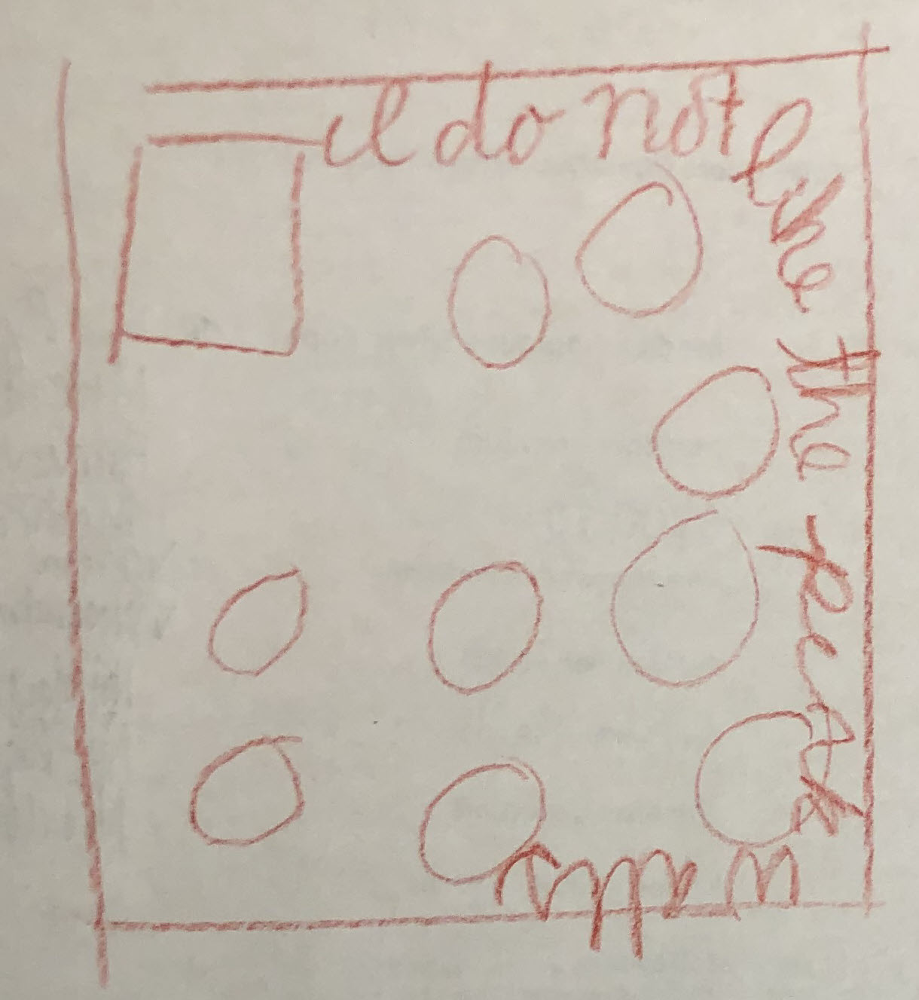
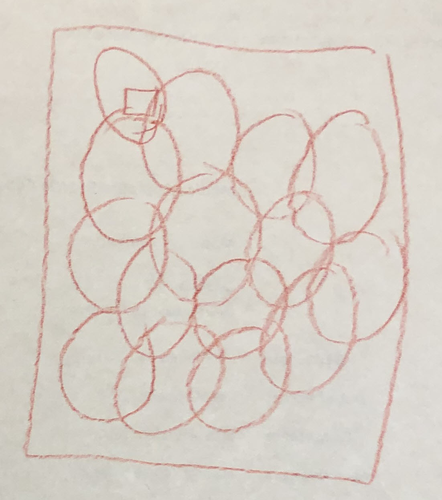
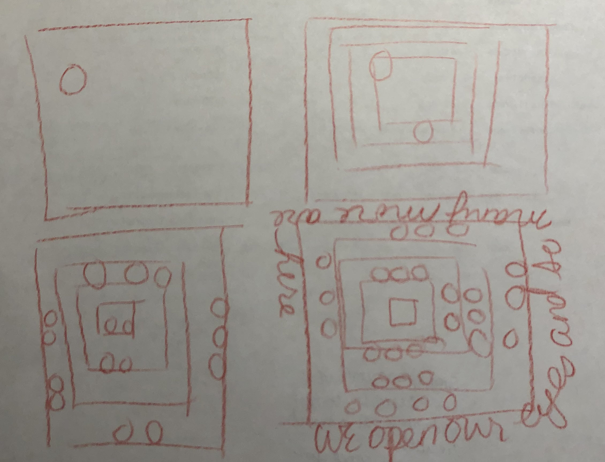

Soul of Code

In these sketches you'll see references to pink. Most people would say the walls in the meetinghouse are white, but there is a pink tinge to the white that bugs the shit of of me. It clashes with the rest of the room. During meeting sometimes I ruminate on the pink that no one else likely sees.

With any luck, this is what it feels like later in the meeting.

A sequence over time. Susan talked about how, if we close our eyes at the start of the meeting, we sometimes open them after 10-15 minutes and there's a whole bunch more people surrounding you than when you closed your eyes.